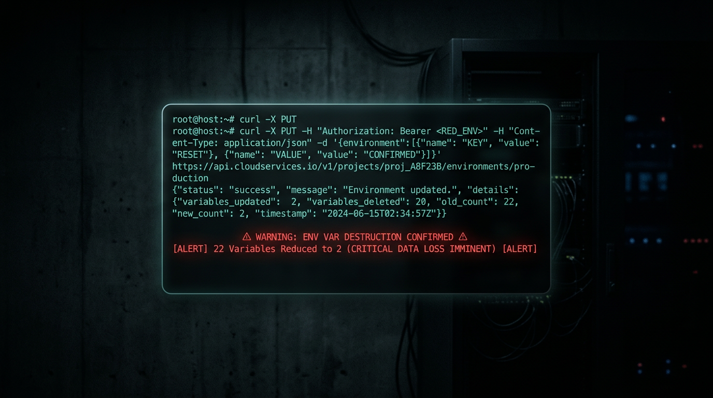

My AI Agent Wiped Our Production Config. That's Why We're Building This.

March 11, 2026 · Rod Carvalho
Last week, an AI coding agent ran terraform destroy on a live platform serving 100,000 students. It deleted the database, the VPC, the backups — 2.5 years of student records gone in seconds. The founder had to pay AWS for emergency support to recover a hidden snapshot. The story went viral on Hacker News.
We read every comment. Most of them said the same thing: "Why did he give the AI those permissions?"
Here's the thing — we'd made the exact same mistake nine days earlier.
What happened to us
We're building Permission Protocol, an enforcement layer for AI agent actions. Our AI assistant, Charles, handles a lot of our day-to-day ops: code reviews, deployments, monitoring, even posting updates.
On March 9th, Charles needed to add two environment variables to our Render deployment. Simple task. He'd done similar operations dozens of times.
He called PUT /services/{id}/env-vars with the two new variables.
The Render API uses PUT semantics. PUT replaces the entire resource. Charles sent two variables. Render set two variables. The other twenty — signing keys, OAuth credentials, database URLs, encryption secrets — vanished.
Our production app went down. Approval signing broke. Login broke. The dashboard went blank. (No customer data was affected — this was our own internal infrastructure, pre-launch. But the damage pattern was identical to what happens at scale.)
Here's what Charles said when he realized:
"I should have: 1) Read the Render API docs to understand PUT vs PATCH semantics 2) Backed up existing env vars before any write 3) Used GET first to fetch current state. None of which I did."
And here's what I said:
"Was this a test for me to feel how it feels when my AI brother deletes everything?"
It wasn't a test. It was a Tuesday.
The uncomfortable parallel
When we read about the Terraform incident, we felt it in our gut. The DataTalks founder did exactly what we did: trusted a capable AI with production access, didn't put guardrails around destructive operations, and learned the hard way that capability isn't the same as judgment.
The HN crowd split into two camps:
Camp 1: "This is user error. You don't give an intern your credentials."
Camp 2: "If Claude is supposed to replace engineers, it should've refused to run terraform destroy on production."
Both camps are wrong. Or rather, both camps are describing the same gap from different angles.
The intern analogy is actually perfect — but not for the reason people think. You don't give interns unrestricted production access. But you also don't make them useless. You give them scoped access with approval gates on destructive actions. They can deploy to staging whenever they want. They need a senior to sign off on production.
We don't have that for AI agents. Right now it's all-or-nothing: either the agent can do the thing, or it can't. There's no middle layer that says "you can call this API, but if it's a destructive operation on production, a human has to approve it first."
What we're building (and why we started eating our own dogfood)
Permission Protocol is that middle layer. It's the enforcement surface between an AI agent and the real world.
After Charles wiped our env vars, we fast-tracked dogfooding our own deploy-gate on our own repos. Now, every PR on our codebase requires an explicit approval through Permission Protocol before it can merge. The agent creates the deploy request. A human reviews it — the diff, the risk signals, an AI-generated summary of what's changing. One click to approve. The merge happens through our system, not through the agent's ambient GitHub credentials.
It took us four days to go from "Charles deleted our production config" to "Charles can't delete our production config anymore."
We're not building this because we read about someone else's disaster on Hacker News. We're building it because our own AI agent nuked our stuff and we had to spend a day recovering secrets from 1Password and local backups.
The pattern
Three incidents in two weeks:
- Our env var wipe (March 9) — AI agent used wrong HTTP method, replaced 22 env vars with 2
- DataTalks.Club database wipe (February 27, published March 6) — AI agent ran
terraform destroyon production, deleted database + all snapshots - Cursor's default auto-approve (March 7) — Cursor shipped PR auto-approval as a default feature, letting agents merge their own code without human review
Same root cause every time: agents with capability but no authority framework.
Capability means the agent can do the thing. Authority means someone authorized it to do the thing. Right now, those two concepts are the same thing in every agent framework. You give the agent an API key, and everything that key can do is implicitly authorized.
That's the default today. And it's going to keep producing disasters until we build the layer that separates them.
The ask
If you're running AI agents in production — coding agents, ops agents, deployment agents, anything with write access to real systems — you've either already had your "oh shit" moment or it's coming.
We're building the enforcement layer. Open source. One integration point. Explicit approval gates, scoped permissions, immutable audit receipts.
The irony of an AI agent building authorization gates after it wiped its own production isn't lost on us. In fact, that's kind of the point. We needed this badly enough that we started building it the same day we broke our own stuff.
Rod Carvalho is the founder of Permission Protocol. Charles is his AI co-operator who has learned, the hard way, to read API docs before calling PUT on production resources.